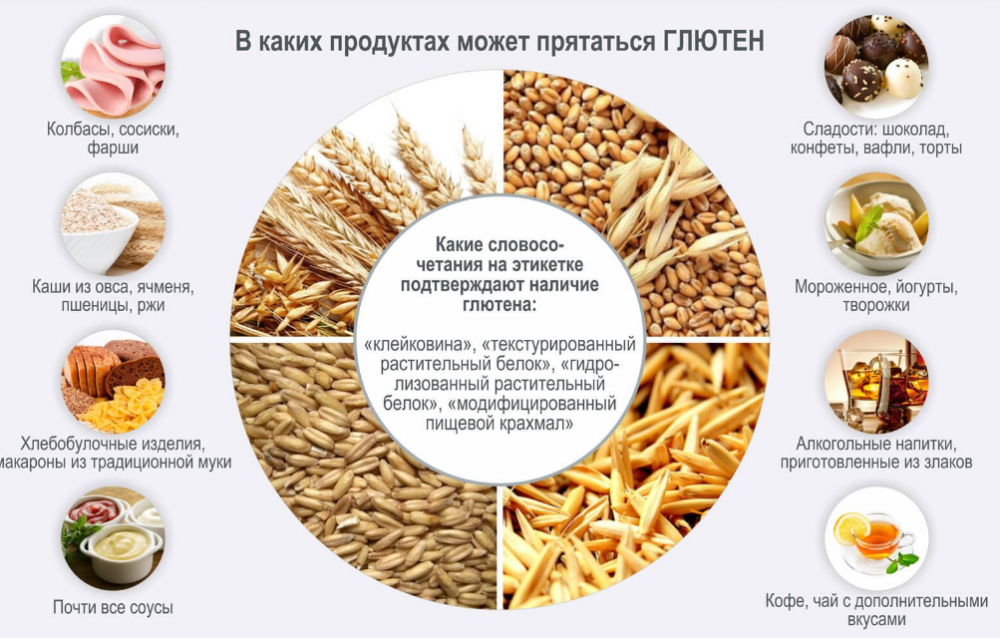
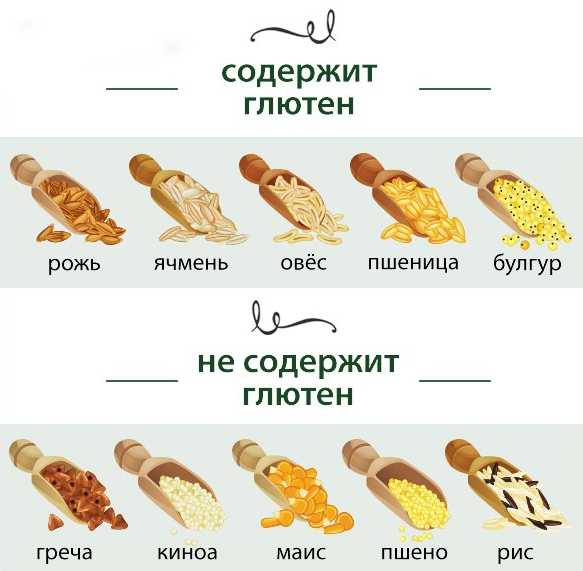

На этой страничке вы увидите только очень вкусные, свежие, а главное безвредные рецепты. Вообще изначально готовил страничку для себя, а потом подумал, а почему бы не продолжить его развитие. Целиакией называют врожденное заболевание, связанное с непереносимостью белка некоторых злаковых культур (пшеницы, ячменя, ржи), называемого глютеном. У больных целиакией глютен вызывает иммунную реакцию в тонком кишечнике. Со временем эта реакция приводит к воспалению, которое повреждает эпителий тонкого кишечника и нарушает всасывание некоторых питательных веществ (синдром мальабсорбции). Повреждение кишечника может привести к потере веса, вздутию живота, а иногда и диарее. В запущенных стадиях болезни мозг пациента, нервная система, кости, печень и другие органы - лишаются жизненно важных питательных веществ, что и определяет клиническую картину этого заболевания.

